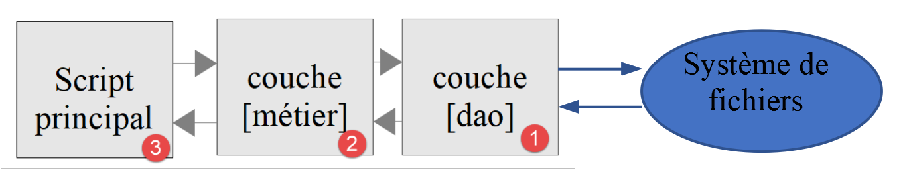
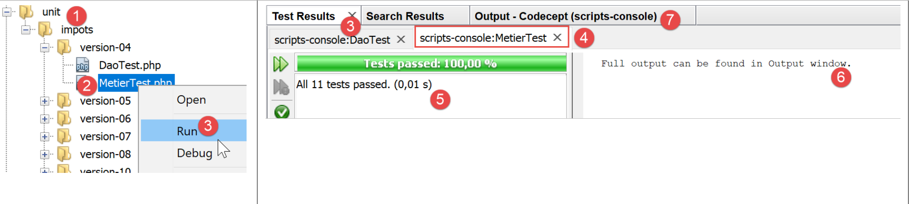

11. Application Exercise – version 4
The tax calculation application will implement the following layered structure:

We will reuse the elements from version 3 in the linked section, modifying them to adapt them to the application’s new architecture. This is sometimes called “refactoring.” Here, we assume that the data required by the application is stored in text files. The [Dao] layer will handle interactions with these files.
11.1. Script Tree Structure

11.2. Objects exchanged between layers
We will retain certain objects from version 3. We list them here as a reminder.
The [ExceptionImpots] exception is the exception that the [Dao] layer will throw when it encounters a problem either with data access or with the nature of the data (incorrect data).
<?php
// namespace
namespace Application;
class ExceptionImpots extends \RuntimeException {
public function __construct(string $message, int $code=0) {
parent::__construct($message, $code);
}
}
The [Utilitaires] class contains methods useful for managing text files (in this case, a single method):
<?php
// namespace
namespace Application;
// a class of utility functions
abstract class Utilitaires {
public static function cutNewLinechar(string $ligne): string {
// delete the end-of-line mark from $ligne if it exists
$longueur = strlen($ligne); // line length
while (substr($ligne, $longueur - 1, 1) == "\n" or substr($ligne, $longueur - 1, 1) == "\r") {
$ligne = substr($ligne, 0, $longueur - 1);
$longueur--;
}
// end - return the line
return($ligne);
}
}
The [TaxAdminData] class is the class that encapsulates the tax administration data:
<?php
namespace Application;
class TaxAdminData {
// tax brackets
private $limites;
private $coeffR;
private $coeffN;
// tax calculation constants
private $plafondQfDemiPart;
private $plafondRevenusCelibatairePourReduction;
private $plafondRevenusCouplePourReduction;
private $valeurReducDemiPart;
private $plafondDecoteCelibataire;
private $plafondDecoteCouple;
private $plafondImpotCouplePourDecote;
private $plafondImpotCelibatairePourDecote;
private $abattementDixPourcentMax;
private $abattementDixPourcentMin;
// initialization
public function setFromJsonFile(string $taxAdminDataFilename): TaxAdminData {
// retrieve the contents of the tax data file
$fileContents = \file_get_contents($taxAdminDataFilename);
…
// we return the object
return $this;
}
private function check($value): \stdClass {
…
return $result;
}
// toString
public function __toString() {
// string Json of object
return \json_encode(\get_object_vars($this), JSON_UNESCAPED_UNICODE);
}
// getters and setters
public function getLimites() {
return $this->limites;
}
…
public function setLimites($limites) {
$this->limites = $limites;
return $this;
}
…
}
We add a new class [TaxPayerData] that encapsulates the data written to the results file:
<?php
// namespace
namespace Application;
// data class
class TaxPayerData {
// data required to calculate the taxpayer's tax liability
private $marié;
private $enfants;
private $salaire;
// tax calculation results
private $montant;
private $surcôte;
private $décôte;
private $réduction;
private $taux;
// setter
public function setFromParameters(string $marié, int $nbEnfants, int $salaireAnnuel) : TaxPayerData{
// taxpayer data required for tax calculation
$this->marié = $marié;
$this->enfants = $nbEnfants;
$this->salaire = $salaireAnnuel;
// initialize the object
return $this;
}
// getters and setters
public function getMarié() {
return $this->marié;
}
…
public function setMarié($marié) {
$this->marié = $marié;
return $this;
}
…
// toString
public function __toString() {
// string Json of object
return \json_encode(\get_object_vars($this), JSON_UNESCAPED_UNICODE);
}
}
Note: Use automatic code generation to generate the constructor, getters, and setters (see linked section). Note that the setters are ‘fluent’.
11.3. The [dao] layer
Here we are focusing on the [1] layer of our application:

11.3.1. The [InterfaceDao] interface
The interface for the [dao] layer will be as follows: [InterfaceDao.php]:
<?php
// namespace
namespace Application;
interface InterfaceDao {
// reading taxpayer data
public function getTaxPayersData(string $taxPayersFilename, string $errorsFilename): array;
// reading tax data (tax brackets)
public function getTaxAdminData(): TaxAdminData;
// recording results
public function saveResults(string $resultsFilename, array $taxPayersData): void;
}
Comments
- The requirements are as follows:
- Taxpayer data is stored in a text file;
- the results of the tax calculation are saved in a text file;
- any errors are saved in a text file;
- it is unknown in what format the tax authority’s data is available. For each new format, the [InterfaceDao] interface must be implemented by a new class;
- methods of the interface that encounter a fatal error when accessing data must throw an exception of type [ExceptionImpots];
- line 9: the method that retrieves taxpayer data [statut marital, nombre d’enfants, salaire annuel];
- the first parameter is the name of the text file containing this data;
- the second parameter is the name of the text file in which to record any errors encountered;
- line 12: the method used to retrieve data from the tax authority. No parameters are passed here because we do not know how the data is stored;
- line 15: the method used to save the tax calculation results to a text file, the name of which is passed as a parameter;
When writing the [InterfaceDao] interface, we know that there will be different ways to implement the [getTaxAdminData] method depending on how the tax administration data is stored. The [InterfaceDao] interface will therefore be implemented by different classes, each handling a specific storage format for this data (arrays, text files, databases, web services). These derived classes will nevertheless share common code, namely the implementation of the [getTaxPayersData, saveResults] methods. We know that this use case can be implemented in two ways (see linked paragraph):
- We create an abstract class C that contains the code common to the derived classes. Class C implements interface I, but certain methods that must be declared in the derived classes are declared as abstract in class C, and therefore class C itself is abstract. We then create classes C1 and C2 derived from C, each of which implements the undefined (abstract) methods of their parent class C in their own way;
- we create a trait T that is nearly identical to the abstract class C from the previous solution. This trait does not implement the interface I because, syntactically, it cannot. We then create classes C1 and C2 that implement interface I and use trait T. All that remains for these classes is to implement the methods of interface I that are not implemented by the trait T they import;
For this example, we will use trait [TraitDao].
11.3.2. The trait [TraitDao]
The code for trait [TraitDao] is as follows: [TraitDao.php]:
<?php
// namespace
namespace Application;
trait TraitDao {
// reading taxpayer data
public function getTaxPayersData(string $taxPayersFilename, string $errorsFilename): array {
// taxpayer data table
$taxPayersData = [];
// error table
$errors = [];
// many errors can occur when managing files
try {
// reading user data
// each line has the form marital status, number of children, annual salary
$taxPayersFile = fopen($taxPayersFilename, "r");
if (!$taxPayersFile) {
throw new ExceptionImpots("Impossible d'ouvrir en lecture les déclarations des contribuables [$taxPayersFilename]", 12);
}
// the current line of the user data file is used
// in the form of marital status, number of children, annual salary
$num = 1; // n° current line
$nbErreurs = 0; // number of errors encountered
while ($ligne = fgets($taxPayersFile, 100)) {
// empty lines are neglected
$ligne = trim($ligne);
if (strlen($ligne) == 0) {
// next line
$num++;
// we loop again
continue;
}
// remove any end-of-line marker
$ligne = Utilitaires::cutNewLineChar($ligne);
// we retrieve the 3 fields married:children:salary which form $ligne
list($marié, $enfants, $salaire) = explode(",", $ligne);
// we check them
// marital status must be yes or no
$marié = trim(strtolower($marié));
$erreur = ($marié !== "oui" and $marié !== "non");
if (!$erreur) {
// the number of children must be an integer
$enfants = trim($enfants);
if (!preg_match("/^\d+$/", $enfants)) {
$erreur = TRUE;
} else {
$enfants = (int) $enfants;
}
}
if (!$erreur) {
// the salary is a whole number without the euro cents
$salaire = trim($salaire);
if (!preg_match("/^\d+$/", $salaire)) {
$erreur = TRUE;
} else {
$salaire = (int) $salaire;
}
}
// mistake?
if ($erreur) {
$errors[] = "la ligne [$num] du fichier [$taxPayersFilename] est erronée";
$nbErreurs++;
} else {
// memorize information
$taxPayersData[] = (new TaxPayerData())->setFromParameters($marié, $enfants, $salaire);
}
// next line
$num++;
}
// are we at the end of the file?
if (!feof($taxPayersFile)) {
// we're out of the loop on a read error
throw new ExceptionImpots("Erreur lors de la lecture de la ligne n° [$num] du fichier [$taxPayersFilename]");
} else {
// we're out of the loop at the end-of-file mark
// save errors in a text file
$this->saveString($errorsFilename, implode("\n", $errors));
// function result
return $taxPayersData;
}
} finally {
// close the file if it is open
if ($taxPayersFile) {
fclose($taxPayersFile);
}
}
}
// recording results
public function saveResults(string $resultsFilename, array $taxPayersData): void {
// save table [$taxPayersData] in text file [$resultsFileName]
// if text file [$resultsFileName] does not exist, it is created
$this->saveString($resultsFilename, implode("\n", $taxPayersData));
}
// saving table results in a text file
private function saveString(string $fileName, string $data): void {
// save table [$data] in text file [$fileName]
// if text file [$fileName] does not exist, it is created
if (file_put_contents($fileName, $data) === FALSE) {
throw new ExceptionImpots("Erreur lors de l'enregistrement de données dans le fichier texte [$fileName]");
}
}
}
Comments
- line 6: here we are defining a trait, not a class;
- Lines 9–89: The method [getTaxPayersData] implements the method of the same name from the [InterfaceDao] interface. It retrieves the [statut marital, nombre d’enfants, salaire annuel] taxpayer data into a text file named [$taxPayersFilename]. It returns this data in the form of a [$taxPayersData] array of elements of type [TaxPayerData] (lines 67, 81);
- The method [getTaxPayersData] is very similar to the method [AbstractBaseImpots::executeBatchImpots] described in the "Link" section, with the following differences:
- The [getTaxPayersData] method only retrieves taxpayer data. It does not perform tax calculations. This is the role of the [métier] layer;
- like the [executeBatchImpots] method, it reports errors. Here, errors are first stored in an array [$errors] (line 13), which is saved to a text file at the end of processing (line 79). Depending on the situation, it may or may not be empty;
- in the case of a fatal error, a [ExceptionImpots] exception is thrown (lines 20, 75);
- line 73: note the processing performed upon exiting the loop in lines 26–71. In fact, the [fgets] function has the drawback of setting the Boolean FALSE to true both when reading the lines has reached the end-of-file marker and when reading could not be completed due to an error. To distinguish between the two cases, we check whether we have reached the end of the file using the [feof] function. If we have not reached the end of the file, it means an error has occurred, and we then throw an exception;
- lines 83–88: [finally] is executed regardless of whether an exception occurred during file processing;
- line 85: if the file has been opened, then the file’s ‘handle’ [$taxPayersFile] has the Boolean value TRUE; otherwise, it has the value FALSE;
- lines 99–105: the private method [saveString] used on line 79 to save the error table to a text file;
- line 99: the method [saveString] takes two parameters:
- [string $filename], which is the name of the text file used to save the data;
- [string $data], which is the string to be saved in the text file. This string will be a set of lines terminated by the newline character \n;
- Line 102: The function PHP [file_puts_contents] writes a string to a text file. It opens the file, writes the string to it, and closes the file. It returns the boolean FALSE if an error occurred;
- line 103: if an error occurs, an exception is thrown;
- lines 92–96: implementation of the [saveResults] method of the [InterfaceDao] interface. The private method [saveString] is used again. Here, the second parameter of [saveString] is a string constructed from the array [$taxPayersData], whose elements are of type [TaxPayerData]. One might wonder what the result of the operation will be:
implode("\n", $taxPayersData)
We have defined the following method [__toString] in the class [TaxPayerData] (link paragraph):
public function __toString() {
// string Json of object
return \json_encode(\get_object_vars($this), JSON_UNESCAPED_UNICODE);
}
The operation
implode("\n", $taxPayersData)
will concatenate each element of the array [$taxPayersData]—converted to a string by its method [__toString]—with the line break character \n. This will result in a string of the form:
json1\njson2\n…
Conclusion
The [TraitDao] trait has implemented two of the methods from the [InterfaceDao] interface, [getTaxPayersData] and [saveResults]:
<?php
// namespace
namespace Application;
interface InterfaceDao {
// reading taxpayer data
public function getTaxPayersData(string $taxPayersFilename, string $errorsFilename): array;
// reading tax data (tax brackets)
public function getTaxAdminData(): TaxAdminData;
// recording results
public function saveResults(string $resultsFilename, array $taxPayersData): void;
}
We still need to implement the [getTaxAdminData] method, which retrieves data from the tax administration.
11.3.3. The [ImpotsWithTaxAdminDataInJsonFile] class
The [ImpotsWithTaxAdminDataInJsonFile] class implements the [InterfaceDao] interface as follows:
<?php
// namespace
namespace Application;
// definition of a ImpotsWithDataInFile class
class DaoImpotsWithTaxAdminDataInJsonFile implements InterfaceDao {
// use of a line
use TraitDao;
// the TaxAdminData object containing tax bracket data
private $taxAdminData;
// the manufacturer
public function __construct(string $taxAdminDataFilename) {
// we want to initialize the [$this->taxAdminData] attribute
$this->taxAdminData = (new TaxAdminData())->setFromJsonFile($taxAdminDataFilename);
}
// returns data for tax calculation
public function getTaxAdminData(): TaxAdminData {
return $this->taxAdminData;
}
}
Comments
- line 7: the class [ImpotsWithTaxAdminDataInJsonFile] implements the interface [InterfaceDao];
- line 9: the class [ImpotsWithTaxAdminDataInJsonFile] uses the trait [traitDao], which, as we know, implements the methods [getTaxPayersData] and [saveResults] of the[InterfaceDao] interface. Therefore, the only thing left for the [ImpotsWithTaxAdminDataInJsonFile] class to do is to implement the [getTaxAdminData] method, which retrieves data from the tax administration;
- line 11: the attribute of type [TaxAdminData] returned by the [getTaxAdminData] method in lines 20–22. This attribute is initialized by the constructor in lines 14–17;
We are now finished with the [dao] layer of our application: we have a class that fully implements the [InterfaceDao] interface we defined. We can now move on to the [métier] layer.
11.4. The [métier] layer
We will now implement the [2] layer of our architecture:

11.4.1. The [InterfaceMétier] interface
The interface for the [métier] layer will be as follows:
<?php
// namespace
namespace Application;
interface InterfaceMetier {
// calculating a taxpayer's taxes
public function calculerImpot(string $marié, int $enfants, int $salaire): array;
// batch mode tax calculation
public function executeBatchImpots(string $taxPayersFileName, string $resultsFileName, string $errorsFileName): void;
}
Comments
- line 9: The [InterfaceMétier] interface can calculate a taxpayer’s tax amount provided it is given the following information: marital status, number of children, annual salary. The [calculerImpot] method does not use the [dao] layer, so it does not throw any exceptions;
- Line 9: The [InterfaceMétier] interface can also calculate the tax amount for a group of taxpayers whose data is contained in the text file named [$taxPayersFileName]. It writes the results to a text file named [$resultsFileName]. The [executeBatchImpots] method must call the [dao] layer, which handles file system access. Exceptions may then be propagated from the [dao] layer, which the [executeBatchImpots] method will not intercept: it will allow them to propagate to the main script. Non-fatal errors are logged in the text file named [$errorsFileName];
- line 9: the [calculerImpot] method is a purely [métier] method. It does not concern itself with the source of the data it uses;
- line 12: the [executeBatchImpots] method will interact with the [dao] layer to read and write data to text files. It will repeatedly call the business method [calculerImpot];
11.4.2. The [Metier] class
The [Metier] class implements the [InterfaceMetier] interface as follows:
<?php
// namespace
namespace Application;
class Metier implements InterfaceMetier {
// layer Dao
private $dao;
// tax administration data
private $taxAdminData;
//---------------------------------------------
// setter layer [dao]
public function setDao(InterfaceDao $dao) {
$this->dao = $dao;
return $this;
}
public function __construct(InterfaceDao $dao) {
// we store a reference on the [dao] layer
$this->dao = $dao;
// recover data for tax calculation
// method [getTaxAdminData] may throw a ExceptionImpots exception
// we then let it go back to the calling code
$this->taxAdminData = $this->dao->getTaxAdminData();
}
// tAX CALCULATION
// --------------------------------------------------------------------------
public function calculerImpot(string $marié, int $enfants, int $salaire): array {
…
// result
return ["impôt" => floor($impot), "surcôte" => $surcôte, "décôte" => $décôte, "réduction" => $réduction, "taux" => $taux];
}
// --------------------------------------------------------------------------
private function calculerImpot2(string $marié, int $enfants, float $salaire): array {
…
// result
return ["impôt" => $impôt, "surcôte" => $surcôte, "taux" => $coeffR[$i]];
}
// revenuImposable=annualwage-discount
// the allowance has a minimum and a maximum
private function getRevenuImposable(float $salaire): float {
…
// result
return floor($revenuImposable);
}
// calculates any discount
private function getDecôte(string $marié, float $salaire, float $impots): float {
…
// result
return ceil($décôte);
}
// calculates any reduction
private function getRéduction(string $marié, float $salaire, int $enfants, float $impots): float {
…
// result
return ceil($réduction);
}
// batch mode tax calculation
public function executeBatchImpots(string $taxPayersFileName, string $resultsFileName, string $errorsFileName): void {
…
// recording results
$this->dao->saveResults($resultsFileName, $results);
}
}
Comments
- line 6: the class [Metier] implements the interface [InterfaceMetier], i.e., the methods [calculerImpot] (lines 30–34) and [executeBatchImpots] (lines 66–70);
- line 8: a reference to the [dao] layer. This is required so that the [métier] layer knows whom to contact when it needs external data. This attribute will be initialized via the setter in lines 14–17 or via the constructor in lines 19–26;
- line 10: the object of type [TaxAdminData] that encapsulates the tax administration data. This data is required by the business method [calculerImpot]. This attribute is initialized via the constructor in lines 19–26;
- Lines 19–26: The constructor initializes the two attributes of the class:
- the [$dao] attribute is initialized with the reference passed as a parameter to the constructor. Note that the type of this parameter is that of the [InterfaceDao] interface, thus allowing the [Metier] class to be initialized by any class implementing this interface;
- the attribute [$taxAdminData] is initialized by calling the method [getTaxAdminData] of the layer [dao];
We conclude that when the methods [calculerImpots] and [executeBatchImpots] are executed, the two attributes [$dao] and [$taxAdminData] are initialized.
The [calculerImpots] method is as follows:
public function calculerImpot(string $marié, int $enfants, int $salaire): array {
// $marié : yes, no
// $enfants : number of children
// $salaire: annual salary
// $this->taxAdminData: tax administration data
//
// we check that we have the correct data from the tax authorities
if ($this->taxAdminData === NULL) {
$this->taxAdminData = $this->getTaxAdminData();
}
// tax calculation with children
$result1 = $this->calculerImpot2($marié, $enfants, $salaire);
$impot1 = $result1["impôt"];
// tax calculation without children
if ($enfants != 0) {
$result2 = $this->calculerImpot2($marié, 0, $salaire);
$impot2 = $result2["impôt"];
// application of the family allowance ceiling
$plafonDemiPart = $this->taxAdminData->getPlafondQfDemiPart();
if ($enfants < 3) {
// $PLAFOND_QF_DEMI_PART euros for the first 2 children
$impot2 = $impot2 - $enfants * $plafonDemiPart;
} else {
// $PLAFOND_QF_DEMI_PART euros for the first 2 children, double for subsequent children
$impot2 = $impot2 - 2 * $plafonDemiPart - ($enfants - 2) * 2 * $plafonDemiPart;
}
} else {
$impot2 = $impot1;
$result2 = $result1;
}
// we take the highest tax
if ($impot1 > $impot2) {
$impot = $impot1;
$taux = $result1["taux"];
$surcôte = $result1["surcôte"];
} else {
$surcôte = $impot2 - $impot1 + $result2["surcôte"];
$impot = $impot2;
$taux = $result2["taux"];
}
// calculation of any discount
$décôte = $this->getDecôte($marié, $salaire, $impot);
$impot -= $décôte;
// calculation of any tax reduction
$réduction = $this->getRéduction($marié, $salaire, $enfants, $impot);
$impot -= $réduction;
// result
return ["impôt" => floor($impot), "surcôte" => $surcôte, "décôte" => $décôte, "réduction" => $réduction, "taux" => $taux];
}
Comments
- This code corresponds to method [AbstractBaseImpots::calculerImpot] of version 3, explained in the linked section. The same applies to the private methods [calculerImpot2, getDecôte, getRéduction, getRevenuImposable];
The [Metier::executeBatchImpots] method is as follows:
public function executeBatchImpots(string $taxPayersFileName, string $resultsFileName, string $errorsFileName): void {
// exceptions from the [dao] layer are allowed to bubble up
// retrieve taxpayer data
$taxPayersData = $this->dao->getTaxPayersData($taxPayersFileName, $errorsFileName);
// results table
$results = [];
// we exploit them
foreach ($taxPayersData as $taxPayerData) {
// tax calculation
$result = $this->calculerImpot(
$taxPayerData->getMarié(),
$taxPayerData->getEnfants(),
$taxPayerData->getSalaire());
// complete [$taxPayerData]
$taxPayerData->setMontant($result["impôt"]);
$taxPayerData->setDécôte($result["décôte"]);
$taxPayerData->setSurCôte($result["surcôte"]);
$taxPayerData->setTaux($result["taux"]);
$taxPayerData->setRéduction($result["réduction"]);
// put the result in the results table
$results [] = $taxPayerData;
}
// recording results
$this->dao->saveResults($resultsFileName, $results);
}
Comments
- Line 1: The method must repeatedly call the [calculerImpot] method for each taxpayer found in the text file named [$taxPayersFileName]. It must write the results to the text file named [$resultsFileName]. Non-fatal errors encountered are logged in the text file named [$errorsFileName]. The method does not throw exceptions itself but allows those thrown by the [dao] layer to propagate;
- Line 4: taxpayer data is requested from the [dao] layer. This layer returns an array of elements of type [TaxPayerData], which is a class of [marié, nbEnfants, salaire, montant, décôte, réduction, surcôte, taux] attributes (see the "link" section). If an exception occurs here, since it is not caught by a catch block, it will automatically propagate to the calling code. This means that in the event of an exception, line 6 is not executed;
- line 6: the results array of type [TaxPayerData];
- lines 8–22: the tax is calculated for each element of the taxpayer array [$taxPayersData]. To do this, the internal method [calculerImpot] is called (line 10);
- lines 15–19: The result obtained is used to initialize the attributes of [TaxPayerData] that had not yet been initialized;
- line 21: the result is accumulated in the results table [$results];
- line 24: once the tax has been calculated for all taxpayers, the results are saved to a text file. The [dao] layer performs this task;
Conclusion
In general, the [métier] layer is fairly simple to write because it interfaces with the [dao] layer, which handles data access and the associated error handling.
11.5. The main script
We will now write the script for the [3] layer of our architecture:

The main script is as follows: [main.php]:
<?php
// strict adherence to declared types of function parameters
declare (strict_types=1);
// namespace
namespace Application;
// error handling by PHP
//ini_set("display_errors", "0");
// interface and class inclusion
require_once __DIR__ . "/TaxAdminData.php";
require_once __DIR__ . "/TaxPayerData.php";
require_once __DIR__ . "/ExceptionImpots.php";
require_once __DIR__ . "/Utilitaires.php";
require_once __DIR__ . "/InterfaceDao.php";
require_once __DIR__ . "/TraitDao.php";
require_once __DIR__ . "/DaoImpotsWithTaxAdminDataInJsonFile.php";
require_once __DIR__ . "/InterfaceMetier.php";
require_once __DIR__ . "/Metier.php";
// test -----------------------------------------------------
// definition of constants
const TAXPAYERSDATA_FILENAME = "taxpayersdata.txt";
const RESULTS_FILENAME = "resultats.txt";
const ERRORS_FILENAME = "errors.txt";
const TAXADMINDATA_FILENAME = "taxadmindata.json";
try {
// creation of the [dao] layer
$dao = new DaoImpotsWithTaxAdminDataInJsonFile(TAXADMINDATA_FILENAME);
// creation of the [business] layer
$métier = new Metier($dao);
// tax calculation in batch mode
$métier->executeBatchImpots(TAXPAYERSDATA_FILENAME, RESULTS_FILENAME, ERRORS_FILENAME);
} catch (ExceptionImpots $ex) {
// error is displayed
print $ex->getMessage() . "\n";
}
// end
print "Terminé\n";
exit;
Comments
- line 24: the name of the taxpayer data file;
- line 25: the name of the results file;
- line 26: the name of the error file;
- line 27: the name of the file jSON containing the tax administration data;
- line 31: creation of the [dao] layer;
- line 33: creation of the [métier] layer based on this [dao] layer;
- line 35: execution of method [executeBatchImpots] of layer [métier];
- lines 36–39: we saw that the [métier] layer could throw exceptions. They are intercepted here;
11.6. Visual tests
11.6.1. Test No. 1
With the following taxpayer file [taxpayersdata.txt]:
oui,2,55555
oui,2,50000
oui,3,50000
non,2,100000
non,3x,100000
oui,3,100000
oui,5,100000x
non,0,100000
oui,2,30000
non,0,200000
oui,3,200000
This produces the following [errors.txt] error file:
la ligne [5] du fichier [taxpayersdata.txt] est erronée
la ligne [7] du fichier [taxpayersdata.txt] est erronée
and the following [resultats.txt] results file:
11.6.2. Test #2
In the main script, we assign a filename that does not exist to the taxpayer file:
The results displayed in the console are as follows:
- line 1: warnings from the PHP interpreter;
- line 2: error message from the exception thrown by the [dao] layer;
It is possible to suppress the error messages from the PHP interpreter:

Line 21 of the code above instructs the system not to display PHP errors. During the development phase, these errors must be displayed. In production mode, they must be hidden.
The execution results are then as follows:
11.7. [Codeception] Tests
Visual tests are highly insufficient:
- we generally limit ourselves to just a few tests;
- attention during this visual check varies, and details may be overlooked;
In the reality of professional development, tests are written by dedicated individuals for whom this is their primary role. They therefore strive to make the tests as comprehensive as possible. To do this, they use testing frameworks.
Here, we will use the Codeception framework [https://codeception.com/] because it can be integrated into Netbeans. It is a framework with a wide range of capabilities. We will use only a few of them. The idea is to have a quick way, after each new version of the application exercise, to verify that it works. The existence of successful tests gives the developer confidence in the code they have written. This is an important factor.
11.7.1. Installing the [Codeception] framework
Like many PHP libraries, the [Codeception] framework is installed with [Composer]. We therefore open a Laragon terminal (see link section).
First, we need to install the PHPUnit [https://phpunit.de/] testing framework. This is because Codeception uses the PHPUnit framework behind the scenes:

Next, we install the Codeception framework:

That’s it. Now let’s look at integrating [Codeception] into Netbeans.
11.7.2. Integrating [CodeCeption] into Netbeans

- In [1-2], we access the project properties;
- In [3-4], make [Codeception] one of the project's test frameworks;


- in [5-8], the [Codeception] framework is initialized for the project;

- In [9], a folder named [tests] was created, along with a configuration file named [codeception.yml] in [10-11]. The file [11] is the same as the file [10]. Codeception simply created a folder named [Important Files] to give the file [10] a specific meaning;
- in [12-13], we return to the project properties;

- in [14-16], the folder [tests] [16] is designated as the project’s test folder;
- in [16], the folder [tests] then appears under the new name [Test Files]. The presence of this folder in a PHP project indicates that this project includes a programmatic testing framework;
- we will create our tests in the [unit] and [17] folders;
11.7.3. [dao] Layer Tests

- We will create all our tests in the [unit] and [1] folders;
- The names of the test classes [Codeception] must end with the keyword [Test]; otherwise, the classes will not be recognized as test classes;
Our test classes [Codeception] will have the following format [https://codeception.com/docs/05-UnitTests]:
<?php
// strict adherence to declared types of function parameters
declare (strict_types=1);
// namespace
namespace Application;
// loading the test environment
…
class DaoTest extends \Codeception\Test\Unit {
// test attributes
private $attribut1;
public function __construct() {
parent::__construct();
// test environment initialization
…
}
// tests
public function testTaxAdminData() {
// tests
$this->assertEquals($expected, $actual);
$this->assertEqualsWithDelta($expected, $actual, $delta);
$this->assertTrue($actual);
$this->assertFalse($actual);
$this->assertNull($actual);
$this->assertEmpty($actual);
$this→assertSame($expected, $actual);
…
}
}
Comments
- line 7: the test classes will be in the same namespace as the application under test;
- lines 9–10: here you will find the [require] operations to load the tested classes and interfaces;
- line 12: the name of the test class must end with the keyword [Test]. This class must extend the class [\Codeception\Test\Unit];
- lines 16–20: the constructor allows us to initialize the test environment;
- line 23: the names of the test methods must begin with the keyword [test];
- lines 25–31: various test methods can be used;
The test class [DaoTest] will be as follows:
<?php
// strict adherence to declared types of function parameters
declare (strict_types=1);
// namespace
namespace Application;
// constants
define("ROOT", "C:/Data/st-2019/dev/php7/poly/scripts-console/impots/version-04");
define("VENDOR", "C:/myprograms/laragon-lite/www/vendor");
// interface and class inclusion
require_once ROOT . "/TaxAdminData.php";
require_once ROOT . "/TaxPayerData.php";
require_once ROOT . "/ExceptionImpots.php";
require_once ROOT . "/Utilitaires.php";
require_once ROOT . "/InterfaceDao.php";
require_once ROOT . "/TraitDao.php";
require_once ROOT . "/DaoImpotsWithTaxAdminDataInJsonFile.php";
require_once ROOT . "/InterfaceMetier.php";
require_once ROOT . "/Metier.php";
require_once VENDOR. "/autoload.php";;
// test -----------------------------------------------------
// definition of constants
const TAXADMINDATA_FILENAME = "taxadmindata.json";
class DaoTest extends \Codeception\Test\Unit {
// TaxAdminData
private $taxAdminData;
public function __construct() {
parent::__construct();
// creation of the [dao] layer
$dao = new DaoImpotsWithTaxAdminDataInJsonFile(ROOT . "/" . TAXADMINDATA_FILENAME);
$this->taxAdminData = $dao->getTaxAdminData();
}
// tests
public function testTaxAdminData() {
…
}
}
Comments
To build the tests for a version from the application exercise, we will use an environment identical to the one used by the main script of version. The one for version 04 is the following [main.php] script:
<?php
// strict adherence to declared types of function parameters
declare (strict_types=1);
// namespace
namespace Application;
// error handling by PHP
ini_set("display_errors", "0");
// interface and class inclusion
require_once __DIR__ . "/TaxAdminData.php";
require_once __DIR__ . "/TaxPayerData.php";
require_once __DIR__ . "/ExceptionImpots.php";
require_once __DIR__ . "/Utilitaires.php";
require_once __DIR__ . "/InterfaceDao.php";
require_once __DIR__ . "/TraitDao.php";
require_once __DIR__ . "/DaoImpotsWithTaxAdminDataInJsonFile.php";
require_once __DIR__ . "/InterfaceMetier.php";
require_once __DIR__ . "/Metier.php";
// test -----------------------------------------------------
// definition of constants
const TAXPAYERSDATA_FILENAME = "taxpayersdata.txt";
const RESULTS_FILENAME = "resultats.txt";
const ERRORS_FILENAME = "errors.txt";
const TAXADMINDATA_FILENAME = "taxadmindata.json";
try {
// creation of the [dao] layer
$dao = new DaoImpotsWithTaxAdminDataInJsonFile(TAXADMINDATA_FILENAME);
// creation of the [business] layer
$métier = new Metier($dao);
// tax calculation in batch mode
$métier->executeBatchImpots(TAXPAYERSDATA_FILENAME, RESULTS_FILENAME, ERRORS_FILENAME);
} catch (ExceptionImpots $ex) {
// error is displayed
print $ex->getMessage() . "\n";
}
// end
print "Terminé\n";
exit;
To test the [dao] layer, in the test class:
- we reuse the environment from lines 13–27 of [main.php];
- in the test class constructor, we construct the [dao] layer as in line 31;
- we write the test methods;
We will proceed in this manner for all test classes.
Let’s return to the complete code for the test class:
<?php
// strict adherence to declared types of function parameters
declare (strict_types=1);
// namespace
namespace Application;
// constants
define("ROOT", "C:/Data/st-2019/dev/php7/poly/scripts-console/impots/version-04");
define("VENDOR", "C:/myprograms/laragon-lite/www/vendor");
// interface and class inclusion
require_once ROOT . "/TaxAdminData.php";
require_once ROOT . "/TaxPayerData.php";
require_once ROOT . "/ExceptionImpots.php";
require_once ROOT . "/Utilitaires.php";
require_once ROOT . "/InterfaceDao.php";
require_once ROOT . "/TraitDao.php";
require_once ROOT . "/DaoImpotsWithTaxAdminDataInJsonFile.php";
require_once ROOT . "/InterfaceMetier.php";
require_once ROOT . "/Metier.php";
require_once VENDOR. "/autoload.php";;
// test -----------------------------------------------------
// definition of constants
const TAXADMINDATA_FILENAME = "taxadmindata.json";
class DaoTest extends \Codeception\Test\Unit {
// TaxAdminData
private $taxAdminData;
public function __construct() {
parent::__construct();
// creation of the [dao] layer
$dao = new DaoImpotsWithTaxAdminDataInJsonFile(ROOT . "/" . TAXADMINDATA_FILENAME);
$this->taxAdminData = $dao->getTaxAdminData();
}
// tests
public function testTaxAdminData() {
// calculation constants
$this->assertEquals(1551, $this->taxAdminData->getPlafondQfDemiPart());
$this->assertEquals(21037, $this->taxAdminData->getPlafondRevenusCelibatairePourReduction());
$this->assertEquals(42074, $this->taxAdminData->getPlafondRevenusCouplePourReduction());
$this->assertEquals(3797, $this->taxAdminData->getValeurReducDemiPart());
$this->assertEquals(1196, $this->taxAdminData->getPlafondDecoteCelibataire());
$this->assertEquals(1970, $this->taxAdminData->getPlafondDecoteCouple());
$this->assertEquals(1595, $this->taxAdminData->getPlafondImpotCelibatairePourDecote());
$this->assertEquals(2627, $this->taxAdminData->getPlafondImpotCouplePourDecote());
$this->assertEquals(12502, $this->taxAdminData->getAbattementDixPourcentMax());
$this->assertEquals(437, $this->taxAdminData->getAbattementDixPourcentMin());
// tax brackets
$this->assertSame([9964.0, 27519.0, 73779.0, 156244.0, 0.0], $this->taxAdminData->getLimites());
$this->assertSame([0.0, 0.14, 0.30, 0.41, 0.45], $this->taxAdminData->getCoeffR());
$this->assertSame([0.0, 1394.96, 5798.0, 13913.69, 20163.45], $this->taxAdminData->getCoeffN());
}
}
Comments
- lines 10–25: loading the environment required for testing and defining constants;
- lines 31–36: construction of the [dao] layer (line 34), followed by initialization of the [$taxAdminData] attribute (line 29). This attribute contains tax administration data;
- lines 39–55: the sole test method. This consists of verifying that the content of the [$taxAdminData] attribute matches what is expected;
- lines 41–50: checks on the constants used in the tax calculation;
- lines 52–55: checks on tax brackets. The [assertSame] method verifies that two PHP entities, in this case tables, are identical;
To run this test class, proceed as follows:

- In [1-2], run the test;
- [3]: the test results window;
- [4]: the executed test class;
- [5]: the results. Here, the single test method was successful;
- [6]: When the test fails, or more commonly when no test was executed, you must check the [6] window. Most often, the test environment failed to load, and therefore no test could be executed. The errors displayed in [6] are the same as those that would occur when running a standard PHP script;
Let’s look at an example of a failed test:
In the test class, we introduce an error in the definition of a constant:
// constants
define("ROOT", "C:/Data/st-2019/dev/php7/poly/scripts-console/impots/version-04x");
then we run the test. The result is as follows:

In the [4] window:

11.7.4. Tests for the [métier] layer
The [MetierTest] test class follows the same construction rules as the [DaoTest] class, but there are more test methods:
<?php
// strict adherence to declared types of function parameters
declare (strict_types=1);
// namespace
namespace Application;
// constants
define("ROOT", "C:/Data/st-2019/dev/php7/poly/scripts-console/impots/version-04");
define("VENDOR", "C:/myprograms/laragon-lite/www/vendor");
// interface and class inclusion
require_once ROOT . "/TaxAdminData.php";
require_once ROOT . "/TaxPayerData.php";
require_once ROOT . "/ExceptionImpots.php";
require_once ROOT . "/Utilitaires.php";
require_once ROOT . "/InterfaceDao.php";
require_once ROOT . "/TraitDao.php";
require_once ROOT . "/DaoImpotsWithTaxAdminDataInJsonFile.php";
require_once ROOT . "/InterfaceMetier.php";
require_once ROOT . "/Metier.php";
require_once VENDOR. "/autoload.php";;
// test -----------------------------------------------------
// definition of constants
const TAXADMINDATA_FILENAME = "taxadmindata.json";
class MetierTest extends \Codeception\Test\Unit {
// business layer
private $métier;
public function __construct() {
parent::__construct();
// creation of the [dao] layer
$dao = new DaoImpotsWithTaxAdminDataInJsonFile(ROOT . "/" . TAXADMINDATA_FILENAME);
// creation of the [business] layer
$this->métier = new Metier($dao);
}
// tests
public function test1() {
$result = $this->métier->calculerImpot("oui", 2, 55555);
$this->assertEqualsWithDelta(2815, $result["impôt"], 1);
$this->assertEqualsWithDelta(0, $result["surcôte"], 1);
$this->assertEqualsWithDelta(0, $result["décôte"], 1);
$this->assertEqualsWithDelta(0, $result["réduction"], 1);
$this->assertEquals(0.14, $result["taux"]);
}
public function test2() {
$result = $this->métier->calculerImpot("oui", 2, 50000);
$this->assertEqualsWithDelta(1385, $result["impôt"], 1);
$this->assertEqualsWithDelta(0, $result["surcôte"], 1);
$this->assertEqualsWithDelta(384, $result["décôte"], 1);
$this->assertEqualsWithDelta(347, $result["réduction"], 1);
$this->assertEquals(0.14, $result["taux"]);
}
public function test3() {
$result = $this->métier->calculerImpot("oui", 3, 50000);
$this->assertEqualsWithDelta(0, $result["impôt"], 1);
$this->assertEqualsWithDelta(0, $result["surcôte"], 1);
$this->assertEqualsWithDelta(720, $result["décôte"], 1);
$this->assertEqualsWithDelta(0, $result["réduction"], 1);
$this->assertEquals(0.14, $result["taux"]);
}
public function test4() {
$result = $this->métier->calculerImpot("non", 2, 100000);
$this->assertEqualsWithDelta(19884, $result["impôt"], 1);
$this->assertEqualsWithDelta(4480, $result["surcôte"], 1);
$this->assertEqualsWithDelta(0, $result["décôte"], 1);
$this->assertEqualsWithDelta(0, $result["réduction"], 1);
$this->assertEquals(0.41, $result["taux"]);
}
public function test5() {
$result = $this->métier->calculerImpot("non", 3, 100000);
$this->assertEqualsWithDelta(16782, $result["impôt"], 1);
$this->assertEqualsWithDelta(7176, $result["surcôte"], 1);
$this->assertEqualsWithDelta(0, $result["décôte"], 1);
$this->assertEqualsWithDelta(0, $result["réduction"], 1);
$this->assertEquals(0.41, $result["taux"]);
}
public function test6() {
$result = $this->métier->calculerImpot("oui", 3, 100000);
$this->assertEqualsWithDelta(9200, $result["impôt"], 1);
$this->assertEqualsWithDelta(2180, $result["surcôte"], 1);
$this->assertEqualsWithDelta(0, $result["décôte"], 1);
$this->assertEqualsWithDelta(0, $result["réduction"], 1);
$this->assertEquals(0.3, $result["taux"]);
}
public function test7() {
$result = $this->métier->calculerImpot("oui", 5, 100000);
$this->assertEqualsWithDelta(4230, $result["impôt"], 1);
$this->assertEqualsWithDelta(0, $result["surcôte"], 1);
$this->assertEqualsWithDelta(0, $result["décôte"], 1);
$this->assertEqualsWithDelta(0, $result["réduction"], 1);
$this->assertEquals(0.14, $result["taux"]);
}
public function test8() {
$result = $this->métier->calculerImpot("non", 0, 100000);
$this->assertEqualsWithDelta(22986, $result["impôt"], 1);
$this->assertEqualsWithDelta(0, $result["surcôte"], 1);
$this->assertEqualsWithDelta(0, $result["décôte"], 1);
$this->assertEqualsWithDelta(0, $result["réduction"], 1);
$this->assertEquals(0.41, $result["taux"]);
}
public function test9() {
$result = $this->métier->calculerImpot("oui", 2, 30000);
$this->assertEqualsWithDelta(0, $result["impôt"], 1);
$this->assertEqualsWithDelta(0, $result["surcôte"], 1);
$this->assertEqualsWithDelta(0, $result["décôte"], 1);
$this->assertEqualsWithDelta(0, $result["réduction"], 1);
$this->assertEquals(0, $result["taux"]);
}
public function test10() {
$result = $this->métier->calculerImpot("non", 0, 200000);
$this->assertEqualsWithDelta(64210, $result["impôt"], 1);
$this->assertEqualsWithDelta(7498, $result["surcôte"], 1);
$this->assertEqualsWithDelta(0, $result["décôte"], 1);
$this->assertEqualsWithDelta(0, $result["réduction"], 1);
$this->assertEquals(0.45, $result["taux"]);
}
public function test11() {
$result = $this->métier->calculerImpot("oui", 3, 200000);
$this->assertEqualsWithDelta(42842, $result["impôt"], 1);
$this->assertEqualsWithDelta(17283, $result["surcôte"], 1);
$this->assertEqualsWithDelta(0, $result["décôte"], 1);
$this->assertEqualsWithDelta(0, $result["réduction"], 1);
$this->assertEquals(0.41, $result["taux"]);
}
}
Comments
- lines 10–25: loading of files defining the test environment. This is the same as for layer [dao];
- lines 31-37: instantiation of the [dao] and [métier] layers;
- lines 40–47: a tax calculation test;
- line 41: a specific tax calculation is performed using layer [métier];
- lines 42–46: verification that the results obtained match those of the tax authority’s simulator [https://www3.impots.gouv.fr/simulateur/calcul_impot/2019/simplifie/index.htm];
- lines 23–26: equality tests are performed to within 1 euro. Indeed, we observed that rounding issues caused the document’s algorithm to yield the expected results to within 1 euro;
- line 27: the tax rate is calculated without any margin of error;
- lines 49–137: this type of test is repeated 10 times, each time with a different taxpayer configuration;
The tests yield the following results:

11.7.5. Tests for future versions
In the following section, the tests for the [dao] and [métier] layers will be identical to those for the version 04. The only difference will be the test environment. We will therefore present only this layer and its test results.